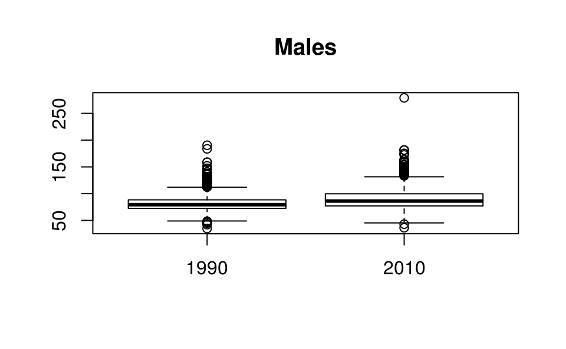
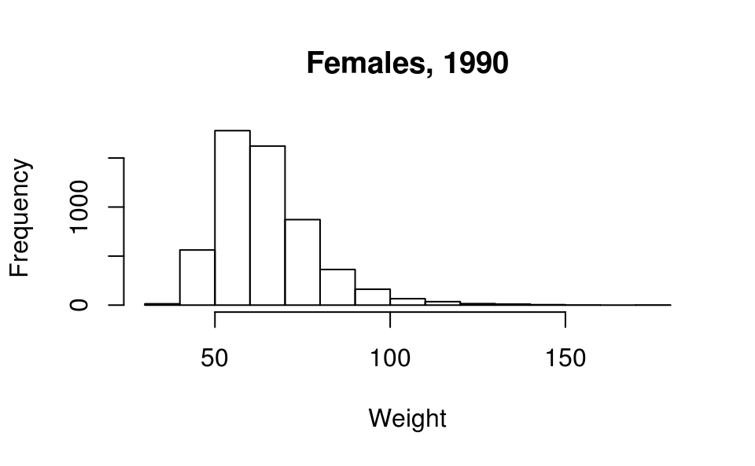
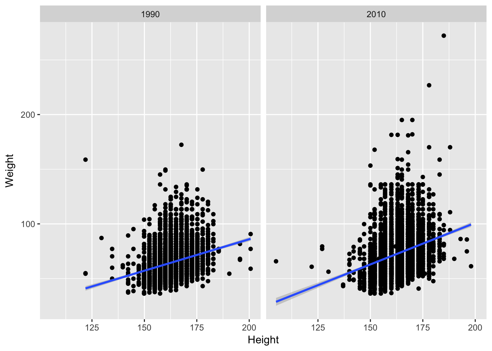
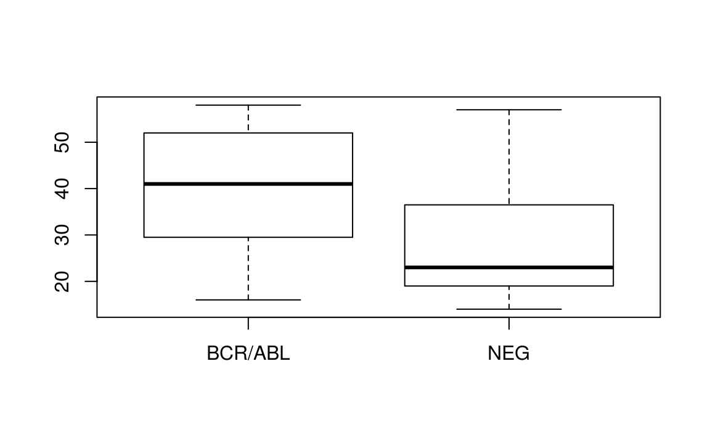

8 Data Input and Exploration
8.1 Behavioral Risk Factor Surveillance System
We will explore a subset of data collected by the CDC through its extensive Behavioral Risk Factor Surveillance System (BRFSS) telephone survey. Check out the link for more information. We’ll look at a subset of the data.
First, we need to get the data. Either download the data from THIS LINK or have R do it directly from the command-line (preferred):
download.file('https://raw.githubusercontent.com/seandavi/ITR/master/BRFSS-subset.csv',
destfile = 'BRFSS-subset.csv')You can check to see the file using the Rstudio file panel or get a directory listing using dir()
Use
file.choose()to find the path to the file ‘BRFSS-subset.csv’path <- file.choose()
Read the data into R using
read.csv(), assigning to a variablebrfss.brfss <- read.csv(path)Use command like
class(),head(),dim(),summary()to explore the data.What variables have been measured?
Can you guess at the units used for, e.g., Weight and Height?
class(brfss) head(brfss) dim(brfss) summary(brfss)Use the
$operator to extract the ‘Sex’ column, and summarize the number of males and females in the survey usingtable(). Do the same for ‘Year’, and for bothSexandYeartable(brfss$Sex) ## ## Female Male ## 12039 7961 table(brfss$Year) ## ## 1990 2010 ## 10000 10000 table(brfss$Sex, brfss$Year) ## ## 1990 2010 ## Female 5718 6321 ## Male 4282 3679 with(brfss, table(Sex, Year)) # same, but easier ## Year ## Sex 1990 2010 ## Female 5718 6321 ## Male 4282 3679Use
aggregate()to summarize the mean weight of each group. What about the median weight of each group? What about the number of observations in each group?with(brfss, aggregate(Weight, list(Year, Sex), mean, na.rm=TRUE)) ## Group.1 Group.2 x ## 1 1990 Female 64.8 ## 2 2010 Female 73.0 ## 3 1990 Male 81.2 ## 4 2010 Male 88.8 with(brfss, aggregate(Weight, list(Year=Year, Sex=Sex), mean, na.rm=TRUE)) ## Year Sex x ## 1 1990 Female 64.8 ## 2 2010 Female 73.0 ## 3 1990 Male 81.2 ## 4 2010 Male 88.8Use a
formulaand theaggregate()function to describe the relationship between Year, Sex, and Weightaggregate(Weight ~ Year + Sex, brfss, mean) # same, but more informative ## Year Sex Weight ## 1 1990 Female 64.8 ## 2 2010 Female 73.0 ## 3 1990 Male 81.2 ## 4 2010 Male 88.8 aggregate(. ~ Year + Sex, brfss, mean) # all variables ## Year Sex Age Weight Height ## 1 1990 Female 46.1 64.8 163 ## 2 2010 Female 57.1 73.0 163 ## 3 1990 Male 43.9 81.2 178 ## 4 2010 Male 56.3 88.9 178Create a subset of the data consisting of only the 1990 observations. Perform a t-test comparing the weight of males and females (“‘Weight’ as a function of ‘Sex’”,
Weight ~ Sex)brfss_1990 = brfss[brfss$Year == 1990,] t.test(Weight ~ Sex, brfss_1990) ## ## Welch Two Sample t-test ## ## data: Weight by Sex ## t = -60, df = 9000, p-value <2e-16 ## alternative hypothesis: true difference in means is not equal to 0 ## 95 percent confidence interval: ## -16.9 -15.8 ## sample estimates: ## mean in group Female mean in group Male ## 64.8 81.2 t.test(Weight ~ Sex, brfss, subset = Year == 1990) ## ## Welch Two Sample t-test ## ## data: Weight by Sex ## t = -60, df = 9000, p-value <2e-16 ## alternative hypothesis: true difference in means is not equal to 0 ## 95 percent confidence interval: ## -16.9 -15.8 ## sample estimates: ## mean in group Female mean in group Male ## 64.8 81.2What about differences between weights of males (or females) in 1990 versus 2010? Check out the help page
?t.test.formula. Is there a way of performing a t-test onbrfsswithout explicitly creating the objectbrfss_1990?Use
boxplot()to plot the weights of the Male individuals. Can you transform weight, e.g.,sqrt(Weight) ~ Year? Interpret the results. Do similar boxplots for the t-tests of the previous question.boxplot(Weight ~ Year, brfss, subset = Sex == "Male", main="Males")
Use
hist()to plot a histogram of weights of the 1990 Female individuals.hist(brfss_1990[brfss_1990$Sex == "Female", "Weight"], main="Females, 1990", xlab="Weight" )
8.1.1 ggplot2
library(ggplot2)‘Grammar of graphics’
- Specify data and ‘aesthetics’ (
aes()) to be plotted - Add layers (
geom_*()) of information
Clean it by coercing Year to factor. A factor is a categorical variable. In this case, our data have only two years represented, so we will treat these two years as “groups” or categories.
brfss$Year <- factor(brfss$Year)Let’s make a couple of subsets of data to work with. First, let’s subset to get only males in 2010.
brfss2010Male = subset(brfss,Sex=='Male' & Year=='2010')and make an “only female” subset.
brfssFemale = subset(brfss,Sex=='Female')```r
ggplot(brfss2010Male, aes(x=Height, y=Weight)) +
geom_point() +
geom_smooth(method="lm")
```
<img src="D2_IO_files/figure-html/unnamed-chunk-5-1.png" width="70%" style="display: block; margin: auto;" />Capture a plot and augment it
plt <- ggplot(brfss2010Male, aes(x=Height, y=Weight)) + geom_point() + geom_smooth(method="lm") plt + labs(title = "2010 Male")
Use
facet_*()for layoutsggplot(brfssFemale, aes(x=Height, y=Weight)) + geom_point() + geom_smooth(method="lm") + facet_grid(. ~ Year)
Choose display to emphasize relevant aspects of data
ggplot(brfssFemale, aes(Weight, fill=Year)) + geom_density(alpha=.2)
8.2 ALL Phenotypic Data
This data comes from an (old) Acute Lymphoid Leukemia microarray data set. The actual data are available at THIS LINK or by downloading using R.
download.file('https://raw.githubusercontent.com/seandavi/ITR/master/ALL-phenoData.csv',
destfile = 'ALL-phenoData.csv')Choose the file that contains ALL (acute lymphoblastic leukemia) patient information and input the date using read.csv(); for read.csv(), use row.names=1 to indicate that the first column contains row names.
path <- file.choose() # look for ALL-phenoData.csvstopifnot(file.exists(path))
pdata <- read.csv(path, row.names=1)Check out the help page ?read.delim for input options. The exercises use ?read.csv; Can you guess why? Explore basic properties of the object you’ve created, for instance…
class(pdata)
## [1] "data.frame"
colnames(pdata)
## [1] "cod" "diagnosis" "sex" "age"
## [5] "BT" "remission" "CR" "date.cr"
## [9] "t.4.11." "t.9.22." "cyto.normal" "citog"
## [13] "mol.biol" "fusion.protein" "mdr" "kinet"
## [17] "ccr" "relapse" "transplant" "f.u"
## [21] "date.last.seen"
dim(pdata)
## [1] 128 21
head(pdata)
## cod diagnosis sex age BT remission CR date.cr t.4.11. t.9.22.
## 01005 1005 5/21/1997 M 53 B2 CR CR 8/6/1997 FALSE TRUE
## 01010 1010 3/29/2000 M 19 B2 CR CR 6/27/2000 FALSE FALSE
## 03002 3002 6/24/1998 F 52 B4 CR CR 8/17/1998 NA NA
## 04006 4006 7/17/1997 M 38 B1 CR CR 9/8/1997 TRUE FALSE
## 04007 4007 7/22/1997 M 57 B2 CR CR 9/17/1997 FALSE FALSE
## 04008 4008 7/30/1997 M 17 B1 CR CR 9/27/1997 FALSE FALSE
## cyto.normal citog mol.biol fusion.protein mdr kinet ccr
## 01005 FALSE t(9;22) BCR/ABL p210 NEG dyploid FALSE
## 01010 FALSE simple alt. NEG <NA> POS dyploid FALSE
## 03002 NA <NA> BCR/ABL p190 NEG dyploid FALSE
## 04006 FALSE t(4;11) ALL1/AF4 <NA> NEG dyploid FALSE
## 04007 FALSE del(6q) NEG <NA> NEG dyploid FALSE
## 04008 FALSE complex alt. NEG <NA> NEG hyperd. FALSE
## relapse transplant f.u date.last.seen
## 01005 FALSE TRUE BMT / DEATH IN CR <NA>
## 01010 TRUE FALSE REL 8/28/2000
## 03002 TRUE FALSE REL 10/15/1999
## 04006 TRUE FALSE REL 1/23/1998
## 04007 TRUE FALSE REL 11/4/1997
## 04008 TRUE FALSE REL 12/15/1997
summary(pdata$sex)
## F M NA's
## 42 83 3
summary(pdata$cyto.normal)
## Mode FALSE TRUE NA's
## logical 69 24 35Remind yourselves about various ways to subset and access columns of a data.frame
pdata[1:5, 3:4]
## sex age
## 01005 M 53
## 01010 M 19
## 03002 F 52
## 04006 M 38
## 04007 M 57
pdata[1:5, ]
## cod diagnosis sex age BT remission CR date.cr t.4.11. t.9.22.
## 01005 1005 5/21/1997 M 53 B2 CR CR 8/6/1997 FALSE TRUE
## 01010 1010 3/29/2000 M 19 B2 CR CR 6/27/2000 FALSE FALSE
## 03002 3002 6/24/1998 F 52 B4 CR CR 8/17/1998 NA NA
## 04006 4006 7/17/1997 M 38 B1 CR CR 9/8/1997 TRUE FALSE
## 04007 4007 7/22/1997 M 57 B2 CR CR 9/17/1997 FALSE FALSE
## cyto.normal citog mol.biol fusion.protein mdr kinet ccr
## 01005 FALSE t(9;22) BCR/ABL p210 NEG dyploid FALSE
## 01010 FALSE simple alt. NEG <NA> POS dyploid FALSE
## 03002 NA <NA> BCR/ABL p190 NEG dyploid FALSE
## 04006 FALSE t(4;11) ALL1/AF4 <NA> NEG dyploid FALSE
## 04007 FALSE del(6q) NEG <NA> NEG dyploid FALSE
## relapse transplant f.u date.last.seen
## 01005 FALSE TRUE BMT / DEATH IN CR <NA>
## 01010 TRUE FALSE REL 8/28/2000
## 03002 TRUE FALSE REL 10/15/1999
## 04006 TRUE FALSE REL 1/23/1998
## 04007 TRUE FALSE REL 11/4/1997
head(pdata[, 3:5])
## sex age BT
## 01005 M 53 B2
## 01010 M 19 B2
## 03002 F 52 B4
## 04006 M 38 B1
## 04007 M 57 B2
## 04008 M 17 B1
tail(pdata[, 3:5], 3)
## sex age BT
## 65003 M 30 T3
## 83001 M 29 T2
## LAL4 <NA> NA T
head(pdata$age)
## [1] 53 19 52 38 57 17
head(pdata$sex)
## [1] M M F M M M
## Levels: F M
head(pdata[pdata$age > 21,])
## cod diagnosis sex age BT remission CR date.cr t.4.11. t.9.22.
## 01005 1005 5/21/1997 M 53 B2 CR CR 8/6/1997 FALSE TRUE
## 03002 3002 6/24/1998 F 52 B4 CR CR 8/17/1998 NA NA
## 04006 4006 7/17/1997 M 38 B1 CR CR 9/8/1997 TRUE FALSE
## 04007 4007 7/22/1997 M 57 B2 CR CR 9/17/1997 FALSE FALSE
## 08001 8001 1/15/1997 M 40 B2 CR CR 3/26/1997 FALSE FALSE
## 08011 8011 8/21/1998 M 33 B3 CR CR 10/8/1998 FALSE FALSE
## cyto.normal citog mol.biol fusion.protein mdr kinet ccr
## 01005 FALSE t(9;22) BCR/ABL p210 NEG dyploid FALSE
## 03002 NA <NA> BCR/ABL p190 NEG dyploid FALSE
## 04006 FALSE t(4;11) ALL1/AF4 <NA> NEG dyploid FALSE
## 04007 FALSE del(6q) NEG <NA> NEG dyploid FALSE
## 08001 FALSE del(p15) BCR/ABL p190 NEG <NA> FALSE
## 08011 FALSE del(p15/p16) BCR/ABL p190/p210 NEG dyploid FALSE
## relapse transplant f.u date.last.seen
## 01005 FALSE TRUE BMT / DEATH IN CR <NA>
## 03002 TRUE FALSE REL 10/15/1999
## 04006 TRUE FALSE REL 1/23/1998
## 04007 TRUE FALSE REL 11/4/1997
## 08001 TRUE FALSE REL 7/11/1997
## 08011 FALSE TRUE BMT / DEATH IN CR <NA>It seems from below that there are 17 females over 40 in the data set. However, some individuals have NA for the age and / or sex, and these NA values propagate through some computations. Use table() to summarize the number of females over 40, and the number of samples for which this classification cannot be determined. When R encounters an NA value in a subscript index, it introduces an NA into the result. Observe this (rows of NA values introduced into the result) when subsetting using [ versus using the subset() function.
idx <- pdata$sex == "F" & pdata$age > 40
table(idx, useNA="ifany")
## idx
## FALSE TRUE <NA>
## 108 17 3
dim(pdata[idx,]) # WARNING: 'NA' rows introduced
## [1] 20 21
tail(pdata[idx,])
## cod diagnosis sex age BT remission CR
## 49006 49006 8/12/1998 F 43 B2 CR CR
## 57001 57001 1/29/1997 F 53 B3 <NA> DEATH IN INDUCTION
## 62001 62001 11/11/1997 F 50 B4 REF REF
## NA.1 <NA> <NA> <NA> NA <NA> <NA> <NA>
## 02020 2020 3/23/2000 F 48 T2 <NA> DEATH IN INDUCTION
## NA.2 <NA> <NA> <NA> NA <NA> <NA> <NA>
## date.cr t.4.11. t.9.22. cyto.normal citog mol.biol
## 49006 11/19/1998 NA NA NA <NA> BCR/ABL
## 57001 <NA> FALSE FALSE TRUE normal NEG
## 62001 <NA> FALSE TRUE FALSE t(9;22)+other BCR/ABL
## NA.1 <NA> NA NA NA <NA> <NA>
## 02020 <NA> FALSE FALSE FALSE complex alt. NEG
## NA.2 <NA> NA NA NA <NA> <NA>
## fusion.protein mdr kinet ccr relapse transplant f.u
## 49006 p210 NEG dyploid FALSE TRUE FALSE REL
## 57001 <NA> NEG hyperd. NA NA NA <NA>
## 62001 <NA> NEG hyperd. NA NA NA <NA>
## NA.1 <NA> <NA> <NA> NA NA NA <NA>
## 02020 <NA> NEG dyploid NA NA NA <NA>
## NA.2 <NA> <NA> <NA> NA NA NA <NA>
## date.last.seen
## 49006 4/26/1999
## 57001 <NA>
## 62001 <NA>
## NA.1 <NA>
## 02020 <NA>
## NA.2 <NA>
dim(subset(pdata, idx)) # BETTER: no NA rows
## [1] 17 21
dim(subset(pdata, (sex == "F") & (age > 40))) # alternative
## [1] 17 21
tail(subset(pdata,idx))
## cod diagnosis sex age BT remission CR date.cr
## 28032 28032 9/26/1998 F 52 B1 CR CR 10/30/1998
## 30001 30001 1/16/1997 F 54 B3 <NA> DEATH IN INDUCTION <NA>
## 49006 49006 8/12/1998 F 43 B2 CR CR 11/19/1998
## 57001 57001 1/29/1997 F 53 B3 <NA> DEATH IN INDUCTION <NA>
## 62001 62001 11/11/1997 F 50 B4 REF REF <NA>
## 02020 2020 3/23/2000 F 48 T2 <NA> DEATH IN INDUCTION <NA>
## t.4.11. t.9.22. cyto.normal citog mol.biol fusion.protein
## 28032 TRUE FALSE FALSE t(4;11) ALL1/AF4 <NA>
## 30001 FALSE TRUE FALSE t(9;22)+other BCR/ABL p190
## 49006 NA NA NA <NA> BCR/ABL p210
## 57001 FALSE FALSE TRUE normal NEG <NA>
## 62001 FALSE TRUE FALSE t(9;22)+other BCR/ABL <NA>
## 02020 FALSE FALSE FALSE complex alt. NEG <NA>
## mdr kinet ccr relapse transplant f.u date.last.seen
## 28032 NEG dyploid TRUE FALSE FALSE CCR 5/16/2002
## 30001 NEG hyperd. NA NA NA <NA> <NA>
## 49006 NEG dyploid FALSE TRUE FALSE REL 4/26/1999
## 57001 NEG hyperd. NA NA NA <NA> <NA>
## 62001 NEG hyperd. NA NA NA <NA> <NA>
## 02020 NEG dyploid NA NA NA <NA> <NA>
## robust `[`: exclude NA values
dim(pdata[idx & !is.na(idx),])
## [1] 17 21Use the mol.biol column to subset the data to contain just individuals with ‘BCR/ABL’ or ‘NEG’, e.g.,
bcrabl <- subset(pdata, mol.biol %in% c("BCR/ABL", "NEG"))The mol.biol column is a factor, and retains all levels even after subsetting. It is sometimes convenient to retain factor levels, but in our case we use droplevels() to removed unused levels
bcrabl$mol.biol <- droplevels(bcrabl$mol.biol)The BT column is a factor describing B- and T-cell subtypes
levels(bcrabl$BT)
## [1] "B" "B1" "B2" "B3" "B4" "T" "T1" "T2" "T3" "T4"How might one collapse B1, B2, … to a single type B, and likewise for T1, T2, …, so there are only two subtypes, B and T? One strategy is to replace two-letter level (e.g., B1) with the single-letter level (e.g., B). Do this using substring() to select the first letter of level, and update the previous levels with the new value using levels<-.
table(bcrabl$BT)
##
## B B1 B2 B3 B4 T T1 T2 T3 T4
## 4 9 35 22 9 5 1 15 9 2
levels(bcrabl$BT) <- substring(levels(bcrabl$BT), 1, 1)
table(bcrabl$BT)
##
## B T
## 79 32Use aggregate() to count the number of samples with B- and T-cell types in each of the BCR/ABL and NEG groups
aggregate(rownames(bcrabl) ~ BT + mol.biol, bcrabl, length)
## BT mol.biol rownames(bcrabl)
## 1 B BCR/ABL 37
## 2 B NEG 42
## 3 T NEG 32Use aggregate() to calculate the average age of males and females in the BCR/ABL and NEG treatment groups.
aggregate(age ~ mol.biol + sex, bcrabl, mean)
## mol.biol sex age
## 1 BCR/ABL F 39.9
## 2 NEG F 30.4
## 3 BCR/ABL M 40.5
## 4 NEG M 27.2Use t.test() to compare the age of individuals in the BCR/ABL versus NEG groups; visualize the results using boxplot(). In both cases, use the formula interface. Consult the help page ?t.test and re-do the test assuming that variance of ages in the two groups is identical. What parts of the test output change?
t.test(age ~ mol.biol, bcrabl)
##
## Welch Two Sample t-test
##
## data: age by mol.biol
## t = 5, df = 70, p-value = 8e-06
## alternative hypothesis: true difference in means is not equal to 0
## 95 percent confidence interval:
## 7.14 17.22
## sample estimates:
## mean in group BCR/ABL mean in group NEG
## 40.2 28.1
boxplot(age ~ mol.biol, bcrabl)